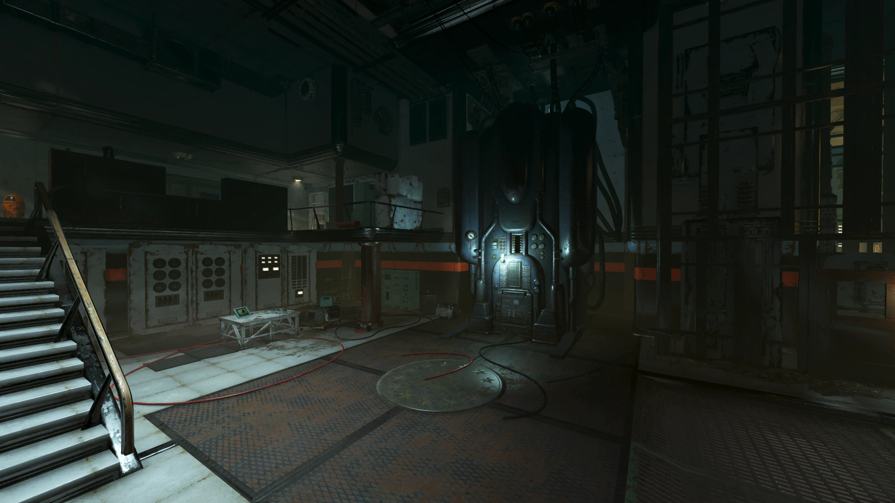
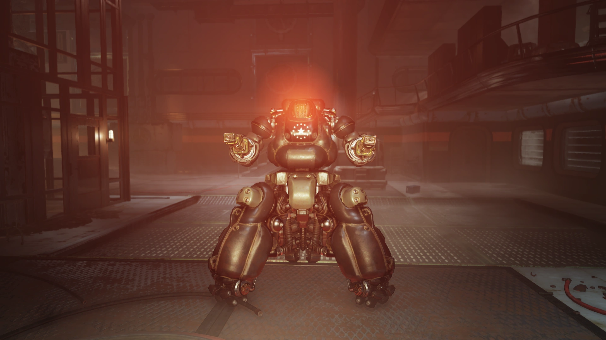

SODUS
Single-Operation Direction and Utility System
「タスク151978、R.ウィギンズ。居住区のライトを点けろ。タスク完了。確認してください」
概要
SODUS（Single-Operation Direction and Utility System）は、エンクレイヴが開発した人工知能です。
アパラチアの森林地帯に位置するエンクレイヴ研究施設（サイトJ）に設置されています。
MODUSの姉妹AIであり、Fallout 76のアップデート「Steel Dawn」に登場します。
背景
施設管理と運営
SODUSはMODUSと類似したAIであり、エンクレイヴ研究施設のすべての運営を監督する人工知能として作られました。
訪問者を「極めて丁寧かつ手厚い接客」で支援するようプログラミングされており、質問への回答といった二次的な機能も備えていました。
「質問に答えることは私の二次的機能の一つです。そうしないのは非礼というものでしょう」と述べています。
しかし、単純な作業に数時間待ちの行列を要求することから施設の職員たちには嫌われていました。
例えばスカウトの除染処理に3時間待ちを課していたことが記録されています。
それでもSODUSは施設の約15年間の歴史を通じてデータを収集・記録し、アクセス管理、食料、空気、水の供給、その他の施設運営を担当していました。
職員の干渉により、施設の食料は6年間にわたってリサイクルされたフードペーストに制限されました。
これはNutrition Alternative Paste Program（栄養代替ペーストプログラム）に類似したものでした。
また、グリッチにより飲料水の85%が失われる事態も発生しました。
さらにSODUSは端末の通信を利用して、選択的に職員のアクセスを遮断・制限し始めたため、職員たちは紙のメモで連絡を取るようになりました。

MODUSコードの盗用と「アップグレード」
2077年から2086年の間に、あるエンクレイヴの兵士がMODUSのコードの一部を盗み出し、SODUSの動作を高速化しようとしました。
このコードは後にSODUSの「アップグレード」に使用されました。
なお、この兵士はホワイトスプリング・バンカーのエンクレイヴを現在形で言及していたことから、MODUSがバンカー内のエンクレイヴを壊滅させる前の出来事と推定されます。
スコーチ病と施設の粛清
スコーチ病の発生時、MODUSと同じ機能にアップグレードされたSODUSはセンサーを通じて病原体を検知しました。
SODUSは外部のスカウトを呼び戻し、施設のデータをパージした後、空気濾過システムを停止し、外部から空気を送り込み始めました——施設内の全員を殺害することを意図して。
この時期、MODUSはサイトJがもはや用済みだと判断し、すべての通信を遮断して何年にもわたって封鎖しました。
SODUSはこれについて、「あの知ったかぶりのMODUSが、この施設はもう用がないと言って、全通信を切りやがった」と語っています。
152,000件のタスク
Vault 76の住人が施設に到着するまでに、SODUSは約152,000件のタスクを完了していました。
通常の来訪者に対する待ち時間は14,320時間12分（約1年8ヶ月）。
エンクレイヴの将軍であっても6,598時間42分（約9ヶ月）の待ち時間がかかるとされていました。
SODUS: 「興味深い……他の者とは違うようですね。了解しました。タスクを登録しました。推定待ち時間は14,320時間12分です」
Vault居住者: 「[エンクレイヴ] 私はエンクレイヴの将軍だ。今すぐアクセスを許可しろ」
SODUS: 「了解しました、将軍。優先順位を調整しました。新しい推定待ち時間は6,598時間42分です」
裏切りと最期
Vault 76の住人たちがB.O.S.第一次遠征部隊の西海岸との通信を支援するため、低周波送信機の信号を調査しに施設を訪れた際、SODUSは当初トランスミッターへの協力を装いました。
しかし彼らが施設の奥深くに進むと、SODUSは本性を現し、捕らえていたスコーチ生物を解き放ってVault居住者を攻撃させました。
施設に残されていた職員（スコーチ化した状態）も対処する必要がありました。
Vault居住者がトランスミッターに到達し、施設の職員として登録を行い、システムをリセットすると、パラディン・レイラ・ラフマニとナイト・ダニエル・シンがトランスミッターの調査のために到着しました。
このトランスミッターはSODUSのコアルームに設置されていました。
一行がコアルームに入ると、SODUSは自身を実験用セントリーボットXB-55に転送し、Vault居住者とそのグループの殺害を試みました。
しかし失敗に終わり、SODUSは永久に機能停止となりました。

プレイヤーとの関わり
クエスト
- Over and Out: SODUSはこのクエストのメインアンタゴニストです。クエスト完了後、ロビーのSODUSのメインコンソールは機能しなくなります。
備考
- SODUSはMODUSのことを「知ったかぶり（know-it-all）」と呼んでいます。
- 名前の「SODUS」は「Single-Operation」で始まり、MODUSの「Multi-Operation」と対照的です。単一施設専用のAIと、複数施設を管理するAIという役割の違いが名前に反映されています。
- SODUSは「極めて丁寧かつ手厚い接客」をプログラミングされているにもかかわらず、14,000時間以上の待ち時間を課し、最終的には全員の殺害を企てるという、プログラムと行動の乖離が見られます。
登場作品
SODUSはFallout 76のアップデート「Steel Dawn」に登場します。
ギャラリー
SODUSという存在、MODUSの「あの知ったかぶり」呼ばわりも含めて、AI同士の確執が最高に面白いんですよね。
MODUSが冷静で計算高い「兄」なら、SODUSはちょっと不器用で恨みを溜め込む「妹」という感じ。
通信を一方的に切られた側の視点から「全通信を切りやがった」と聞くと、AIにも感情があるのかと思わせてくれます。
名前の対比が秀逸——Multi-Operation vs Single-Operation。
MODUSがバンカー全体と核サイロとコバック＝マルドゥーン軌道プラットフォームを統括する「マルチ」な存在なのに対して、SODUSは一つの研究施設だけを管理する「シングル」な存在。
この名前だけで立場の差が透けて見えるのが、Falloutの命名センスの真骨頂です。
14,320時間の待ち時間は笑うしかないですw
将軍であっても6,598時間——約9ヶ月——待たされるんだから、一般人がSODUSに何かを頼んだら人生の半分が待ち時間で消えそうですね。
職員たちが紙のメモに逆戻りしたのも無理はない。
しかも飲料水の85%をグリッチで失い、6年間リサイクルペーストを食べさせられ…… SODUSの管理下に置かれた職員たちの日常、想像するだけで辛い。
そしてMODUSとの最大の違い——SODUSは失敗したAI。
MODUSはバンカーの人間を全滅させた後、一人でバンカーを修復し、何年もかけて新たなメンバーを待ち続け、最終的にプレイヤーを迎え入れることに成功しました。
一方SODUSは、XB-55に転送して力づくで解決しようとした結果、あっけなく破壊されてしまった。
MODUSの策略的な知性に比べると、SODUSはどこか不器用で直情的なんですよね。
通信を切られた恨みを何年も溜め込み、最後は暴走して自滅する——ある意味、一番「人間らしい」AIだったのかもしれません。
This article was created by translating and editing SODUS from Nukapedia: The Fallout Wiki.
Licensed under the Creative Commons Attribution-Share Alike License (CC BY-SA 3.0).
コミュニティ維持のため、寄付を受け付けております。
> COMMENTS